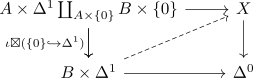

cofibration of simplicial sets
Definition
Let $\iota: A \rightarrow X$ be a morphism of simplicial sets $A,X$. Then $\iota$ is said to be a cofibration, if the boxtensor has the left lifting property against kan fibrations $X \rightarrow \Delta^0$
